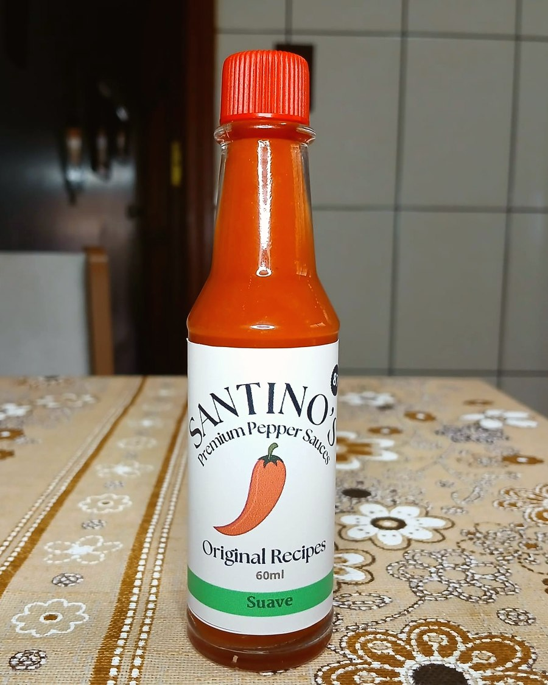

Pimenta de todo dia
Santino's Suave
O Santino's Suave é o molho ideal para acompanhar o dia a dia. Elaborado com um blend exclusivo de pimentas e condimentos, oferece uma picância delicada e equilibrada, capaz de realçar o sabor dos alimentos sem se sobrepor às suas características naturais. Versátil e cheio de personalidade, harmoniza com praticamente qualquer refeição, desde carnes e hambúrgueres até massas, lanches, pizzas, saladas e petiscos. É a escolha perfeita para quem aprecia um toque de pimenta, mas faz questão de preservar o sabor original de cada ingrediente. Com seu perfil suave e sabor marcante, o Santino's Suave é aquele molho que conquista um espaço permanente à mesa, tornando qualquer refeição ainda mais saborosa. Picância: Suave. Perfil sensorial: Blend exclusivo de pimentas e condimentos, com sabor equilibrado e versátil. Harmonização: Ideal para carnes, lanches, massas, pizzas, saladas, petiscos e qualquer refeição do dia a dia. Embalagem: Frasco de vidro de 60 ml.
Combina com TUDO.